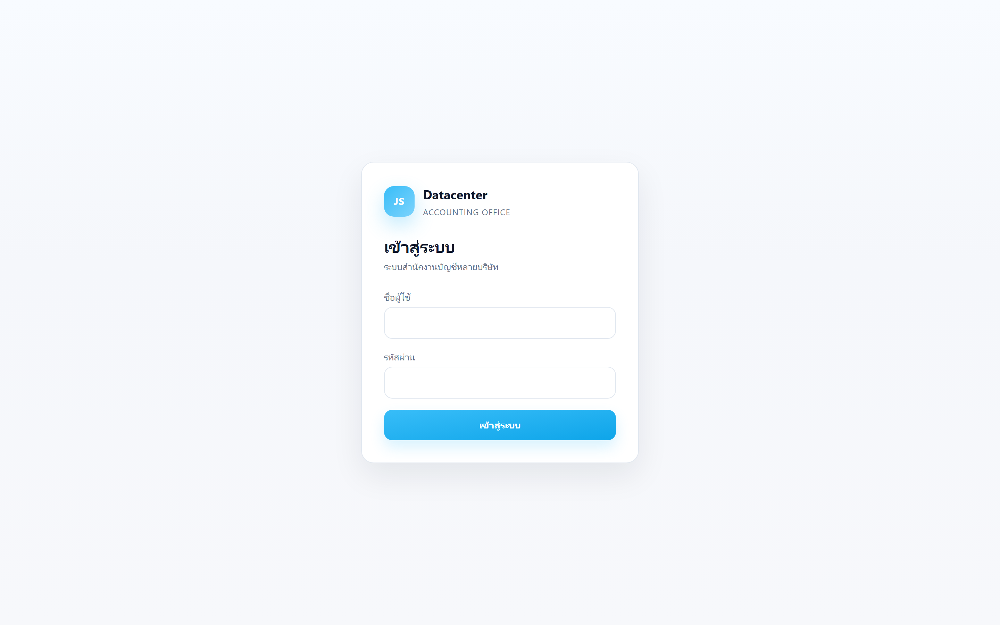
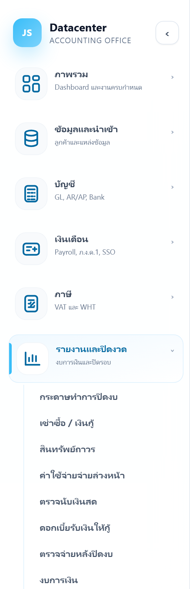

ภาพรวมระบบ JSP Datacenter
แพลตฟอร์มสำหรับ สำนักงานบัญชี ที่ดูแลลูกค้าหลายบริษัทในที่เดียว — ตั้งแต่นำเข้าข้อมูลจากโปรแกรม Express, จัดการบัญชี/ภาษี/เงินเดือน ไปจนถึงปิดงบและออกงบการเงิน คู่มือชุดนี้อธิบายการใช้งานทีละหน้าจอ พร้อมภาพประกอบจากระบบจริง
แบ่งเป็น 2 ส่วน: (1) ภาพรวมระบบ (หน้านี้) อธิบายแนวคิด การเข้าใช้งาน และการนำทาง และ (2) คู่มือรายหน้า อธิบายการใช้งานของแต่ละเมนูอย่างละเอียด ขณะนี้จัดทำแล้ว: Dashboard · ลูกค้า · นำเข้าข้อมูล · งบทดลอง · บัญชีแยกประเภท · ภาษีมูลค่าเพิ่ม (ภ.พ.30) — เมนูที่เหลือจะทยอยเพิ่ม (ในเมนูซ้ายจะขึ้นว่า “เร็วๆ นี้”)
1. ระบบนี้ทำอะไร
JSP Datacenter เป็นระบบกลางของสำนักงานบัญชี ออกแบบมาเพื่อ:
- รองรับลูกค้าได้ไม่จำกัดจำนวน — แต่ละลูกค้าคือ 1 บริษัท (มีเลขผู้เสียภาษี/สาขาของตัวเอง) และข้อมูลถูกแยกกันเด็ดขาด
- ดึงข้อมูลบัญชีจากโปรแกรม Express อัตโนมัติ — ไม่ต้องคีย์ซ้ำ ลดความผิดพลาด
- ทำงานปิดงบครบวงจร — งบทดลอง, บัญชีแยกประเภท, กระดาษทำการปิดงบ, งบการเงิน, แบบภาษี
- ติดตามงานตามกำหนด — ปฏิทินยื่นภาษี/ประกันสังคม และงานที่มอบหมายข้ามบริษัท
2. หลักการสำคัญที่ต้องเข้าใจก่อนใช้งาน
5 หลักการนี้เป็นรากฐานของทั้งระบบ เข้าใจแล้วจะใช้งานได้ถูกทาง:
ข้อมูลบัญชีทุกอย่างที่ Express มี จะ ดึงจาก Express เท่านั้น ผ่านเมนู “นำเข้าข้อมูล” ที่เดียว (ดึงทุกอย่างครั้งเดียว) — ไม่มีการคีย์มือทับข้อมูลที่ Express ให้มา การป้อนมือทำได้เฉพาะข้อมูลที่ Express ไม่มี เช่น เงินเดือน, ค่าใช้จ่ายจ่ายล่วงหน้า, รายการปรับปรุงปิดงบ, เอกสารแนบ
ทุกหน้าจอทำงานกับ “บริษัทที่เลือกอยู่” ด้านบนเสมอ — เปลี่ยนบริษัทเมื่อไร ข้อมูลทั้งหน้าจะเปลี่ยนตาม
ระบบไม่ผูกกับอุตสาหกรรมใดอุตสาหกรรมหนึ่ง (ซื้อมา-ขายไป, ผลิต, บริการ, รับเหมา, ขนส่ง ฯลฯ) ผังบัญชี/หมวดสินทรัพย์/รายงานยืดหยุ่นตามแต่ละบริษัท
เมื่อปิดงบและ lock รอบบัญชีแล้ว ยอดจะถูกเก็บเป็น snapshot ถาวร — ตรวจย้อนหลังได้แม้ Express จะถูกแก้ภายหลัง (เก็บหลักฐาน/บันทึกการใช้งานอย่างน้อย 10 ปีตามกฎหมาย)
ผู้ใช้ที่มีสิทธิ์ในบริษัทนั้นแก้ไข/ลบข้อมูลได้ (ไม่มีขั้นตอนอนุมัติ) แต่ระบบบันทึกทุกการเปลี่ยนแปลง (ค่าเดิม/ค่าใหม่/ผู้แก้/เวลา) ไว้ในประวัติการใช้งานเสมอ
3. การเข้าสู่ระบบ
เปิดเบราว์เซอร์ไปที่ที่อยู่ของระบบ จะพบหน้าเข้าสู่ระบบ กรอก ชื่อผู้ใช้ และ รหัสผ่าน ที่ได้รับ แล้วกด “เข้าสู่ระบบ”

หากกรอกผิดจะขึ้นข้อความ “ชื่อผู้ใช้หรือรหัสผ่านไม่ถูกต้อง” — เมื่อเข้าสำเร็จ ระบบจะพาไปที่หน้า Dashboard โดยอัตโนมัติ
4. ส่วนประกอบหน้าจอและการนำทาง
หลังเข้าสู่ระบบ หน้าจอแบ่งเป็น 3 ส่วนหลัก:

① เมนูด้านซ้าย (Sidebar)
เมนูจัดเป็น 7 กลุ่มตามลักษณะงาน กดที่กลุ่มเพื่อกางรายการเมนูย่อย ปุ่ม ‹/› ด้านบนใช้ย่อ/ขยายเมนู

② แถบเลือกบริษัท (สำคัญที่สุด)
ช่องเลือกบริษัทด้านบนคือ “บริบท” ของทุกหน้าจอ ระบบจะแสดงข้อมูลของบริษัทที่เลือกอยู่เท่านั้น พิมพ์ชื่อหรือรหัสเพื่อค้นหาได้ หากยังไม่เลือกบริษัท หลายหน้าจะยังไม่แสดงข้อมูล
③ พื้นที่เนื้อหา
แสดงหน้าจอของเมนูที่เลือก แต่ละหน้ามักมีหัวข้อหน้า (ชื่อเมนู) + ปุ่มการทำงานมุมขวาบน + ตัวกรอง + ตารางข้อมูล บางหน้ามีแท็บย่อยด้านในเพื่อแยกมุมมอง
5. ขั้นตอนการทำงานหลัก (ภาพรวม)
สำหรับลูกค้าหนึ่งราย ลำดับการทำงานทั่วไปเป็นดังนี้:
- เลือก/สร้างบริษัทลูกค้า — เลือกบริษัทจากแถบด้านบน (บริษัทที่มีข้อมูลใน Express จะถูกเตรียมไว้ให้) · คู่มือ
- นำเข้าข้อมูลจาก Express — เมนู “นำเข้าข้อมูล” ดึงผังบัญชี ยอดยกมา ความเคลื่อนไหว และรอบบัญชี เข้าระบบครั้งเดียว · คู่มือ
- ตรวจสอบข้อมูลบัญชี — ดู งบทดลอง / บัญชีแยกประเภท ว่ายอดถูกต้องและสมดุล
- ทำกระดาษทำการปิดงบ — บันทึกรายการปรับปรุง, ค่าเสื่อม, ค่าใช้จ่ายจ่ายล่วงหน้า, เช่าซื้อ ฯลฯ
- ออกงบการเงินและแบบภาษี — งบฐานะการเงิน/กำไรขาดทุน, ภ.พ.30, ภ.ง.ด.50 และอื่นๆ
- ปิดรอบบัญชีและล็อกงบ — lock รอบบัญชี และจัดชุดรายงานที่ยื่นเป็นเวอร์ชันถาวร
นำเข้า → ตรวจ → ปรับปรุง → ออกงบ → ปิดงวด — ข้อมูลไหลจาก Express มาเป็นงบการเงินและแบบภาษีโดยมีระบบช่วยตรวจความถูกต้องทุกขั้น
6. แผนผังเมนูทั้งหมด
ระบบมี 7 กลุ่มเมนู คู่มือรายหน้าจะทยอยจัดทำครบทุกเมนู:
ถ้าเพิ่งเริ่มใช้ระบบ แนะนำให้อ่านตามลำดับนี้: Dashboard → ลูกค้า → นำเข้าข้อมูล → งบทดลอง → บัญชีแยกประเภท